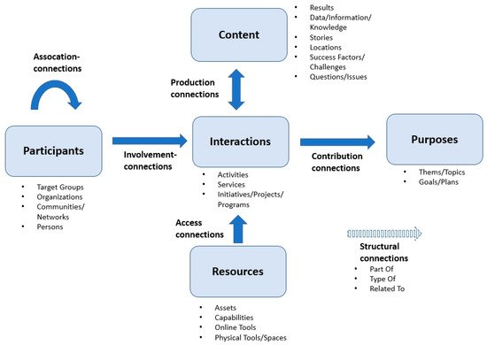

Some other Domains for which we may have dedicated sections, so interest groups can collaborate…
Open Science
With hypercapitalist science getting more corrupted all the time there’s a lot of interest in Open Science, and many proponents are fellow fedizen. There is much opportunity here to create a strong interest group. A group too where participants, given their expertise, are very good at analysing domains, standardizing specs and setting up procedures. All stuff that can help other domains bootstrap faster.
We have the #software:olki project in our community, but in a recent toot thread @rigelk and @cerisara told me that funding has dried up unfortunately. This while with SciFed draft they created a good basis to expand on. Grassroots Review Journals is also interested and already planning AP support (in a RSS-like use case, see Pubfair).
Maybe @VictorVenema and @erik are willing to rally people for this cause, do some advocacy… ?
(Note: I added SciFed to AcitvityPub Developer Resources watchlist and also to delightful-open-science curated list that’ll soon be greatly expanded due to wonderful work of @VictorVenema)
Open Funding
Via @rysiek another toot thread veered into interesting topic of funding free software and open grassroots communities. This domain may be excellent to brainstorm exciting applications. I maintain delightful-funding (huge backlog to process, co-maintainers welcome), and striking is the fragmentation in the landscape.
A project/community asking for donations will not mention more than max. 4 donation options, so they choose the biggest platforms where network effects result in highest ‘yield’. In other words: people naturally flock to the Big Tech dominators, while involved creating FOSS that aims to break their monopolies.
I imagine people setting up federated instances that host their own ‘OpenCollective’-like fund aggregators. The federated software may provide backend integrations to several donation / funding / payment services. Then on Fediverse funding widgets integrate with e.g. your Pleroma / Masto profile, and on PeerTube below a video, or in Mobilizon to finance an Event.
Micropayment
In a different part of the financial services spectrum we can look at Micropayments. Super duper interesting stuff is already planned in the form of @cwebber Spritely Hyptis. We should get an interest group going for this, folks, to among others help Chris realize this great vision sooner!
Another interesting and related discussion in this domain is @richardhroth1’s Is your participation in this exchange worth 2 cents? (PonyUPS and PonyXPS). PonyUPS works best in a small-scale Community context (just like Hyptis), and that leads to the next domain to consider…
Community
On the Fediverse clearly defining concepts of Community is key, and many people are (knowingly or not) involved in building communities (around their apps or instances, for instance). Getting Community right on fedi can be a great boon for so many fedi apps, and help take Fediverse next-level. Fedi culture is rooted in a “Sense of Community”.
This domain has a bunch of subdomains that may require separate interest groups. In the paper A Community Network Ontology for Participatory Collaboration Mapping: Towards Collective Impact by Aldo de Moor of CommunitySense community is depicted as follows:

We already have ongoing discussions on several of these subdomains: